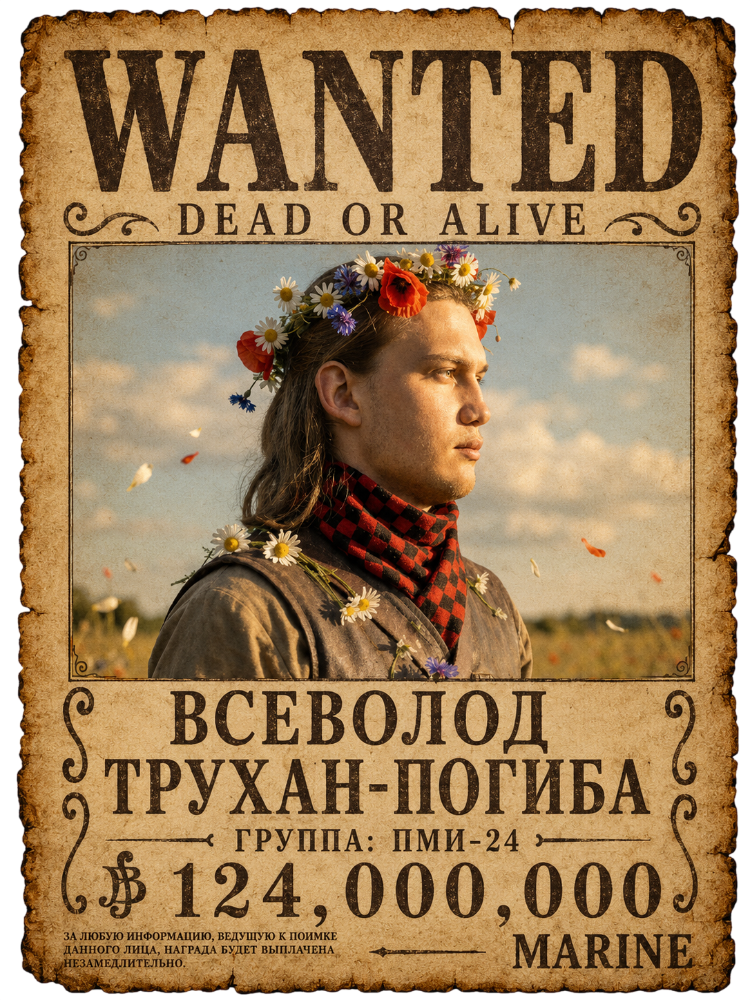

Обо мне
Био

Моё имя — Всеволод, но меня чаще называют просто Володя. Я студент группы ПМИ-24. Увлекаюсь программированием, работой с нейросетями, творчеством и всем понемногу. В свободное время стараюсь уделять внимание своим хобби, друзьям и активному отдыху. Звёзд с неба не хватаю, но всегда стараюсь учиться и развиваться в разных областях. В будущем планирую продолжать развиваться в IT-сфере и построить на этом карьеру.
Навыки
Программирование и разработка
- Основы программирования и разработки приложений
- Работа с API
- Работа с LLM
- Базовое понимание архитектуры проектов
- HTML и базовая семантика
Инструменты разработки
- Git: ветвление, работа с удалёнными репозиториями, просмотр истории
- Работа с виртуальными окружениями: venv
- Базовая настройка среды разработки
Операционные системы
- Работа с Linux на примере Fedora KDE
- Базовая настройка системы и интерфейса
Общие навыки
- Умение разбираться в новых технологиях
- Поиск и анализ информации
- Самостоятельное обучение